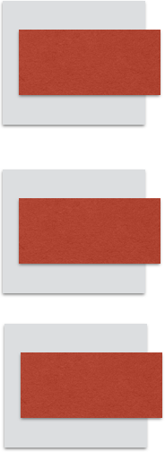
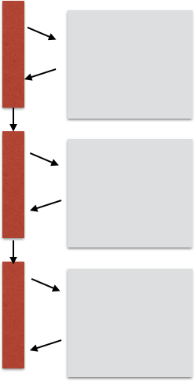
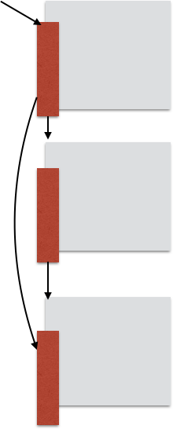

<!DOCTYPE html><html lang="en"></html><head><meta charset="utf-8"><title>reveal.js - The HTML Presentation Framework</title><meta name="description" content="A framework for easily creating beautiful presentations using HTML"><meta name="author" content="Hakim El Hattab"><meta name="apple-mobile-web-app-capable" content="yes"><meta name="apple-mobile-web-app-status-bar-style" content="black-translucent"><meta name="viewport" content="width=device-width, initial-scale=1.0, maximum-scale=1.0, user-scalable=no, minimal-ui"><link rel="stylesheet" href="css/reveal.css"><link id="theme" rel="stylesheet" href="css/theme/black.css"><!-- Code syntax highlighting--><link rel="stylesheet" href="lib/css/zenburn.css"><!-- Printing and PDF exports--><link rel="stylesheet" href="css/extra-components.css"><script>var link = document.createElement( 'link' );
link.rel = 'stylesheet';
link.type = 'text/css';
link.href = window.location.search.match( /print-pdf/gi ) ? 'css/print/pdf.css' : 'css/print/paper.css';
document.getElementsByTagName( 'head' )[0].appendChild( link );</script><!--if lt IE 9script(src='lib/js/html5shiv.js')
--><body><div class="reveal"><!-- Any section element inside of this container is displayed as a slide--><div class="slides"><!----><!-- Intro / Story--><!----><section><div class="fragment"><strong>Highly Cohesive Software Programming</strong><p>jakeout@</p></div></section><section><div class="fragment"><p>Let's pretend you're a software engineer</p><p class="fragment">Senior Jawa Developer</p><aside class="notes">Let's pretend you're a software engineer
Let's say I have a mythical language called Jawa,</aside></div></section><section><div class="fragment"><p class="fragment dimafter">new feature</p></div></section><section><div class="fragment"><p class="fragment dimafter">a service to upload translations to ci</p><p class="fragment">ci-3proto</p></div></section><section><div class="fragment"><p class="fragment dimafter">awesome.</p><p class="fragment dimafter">Your teammate just finished a tool to convert resources into d3 visualizations</p><div class="fragment"><div>r2d3</div></div><aside class="notes">and they push it up</aside></div></section><section><div class="fragment"><p>let's make them work together</p><p class="fragment">oh dear</p><aside class="notes">It turns out, r2d3 and ci3proto were both mutating the same resources in memory.
you see, r2d3 was built unextensibly</aside></div></section><section><div class="fragment"><p>They're tangled together</p><div class="fragment"></div><aside class="notes">you have to hack them apart</aside></div></section><section><div class="fragment"><p>Tear them apart to start over</p></div></section><section><div class="fragment"><p>They were `Tightly Coupled`: Unrelated, but inseparable</p></div></section><section><div class="fragment"><p>What you wanted was `Cohesion`</p><p>Related things nearby.</p></div></section><section><div class="fragment"><p><strong>Benefits of High Cohesion</strong></p><p class="fragment replaceafter">Enables reuse (e.g., MVC)</p><p class="fragment replaceafter">Reduces size of refactorings</p><p class="fragment replaceafter">Makes things easier to test</p><p class="fragment">Enables Separation of Concerns</p></div></section><section><div class="fragment"><p>High Cohesion: Make things easy to understand<p class="fragment replaceafter"><em>source: http://xkcd.com/657/</em></p><p class="fragment"><em>source: http://xkcd.com/657/</em></p></p><aside class="notes"><p>star wars may seem complicated,</p><p>but really, it has many characters that</p><p>come together occasionally, and then have their own story</p><p>compared to primer, with very few characters, is nearly incomprehensible</p><p>a movie, about time travel</p></aside></div></section><section><div class="fragment"><p>What leads to High Cohesion?</p></div></section><section><div class="fragment"><p>Using SOLID</p><p><em>Martin Fowler</em></p><p></p><ul><li class="fragment dimafter">Single Responsibility</li><li class="fragment dimafter">Open/Closed</li><li class="fragment dimafter">Liskov Substitution</li><li class="fragment dimafter">Interface Segregation</li><li class="fragment">Dependency Inversion</li></ul><aside class="notes">Martin fowler, prominent OO proponent
the solid princples are</aside></div></section><section><div class="fragment"><p>not the only advocate</p></div></section><section><div class="fragment"><p>tightly coupled code is unmockable</p><aside class="notes">you see, it's hard to write unit tests if your code is uncohesive</aside></div></section><section><div class="fragment"><p>Google Testability Team Testable Software Principles</p><p><em>Jonathan Wolter, Russ Ruffer, Miško Hevery</em></p><ul><li class="fragment dimafter">Class does too much</li><li class="fragment dimafter">Reaching into collaborators</li><li class="fragment dimafter">Has Singletons</li><li class="fragment">Constructors do real work</li></ul><aside class="notes"></aside></div></section><section><div class="fragment"><h2>Holub on Patterns</h2><p><em>Allen Holub</em></p><p></p><ul><li class="fragment dimafter">Extends is evil</li><li class="fragment dimafter">Getters and Setters are evil</li></ul><aside class="notes">Allen holub promonent JavaWorld, Dr. Dobbs
Consultant</aside></div></section><section><div class="fragment"><h2>All just different angles on same ideas:</h2><ol><li class="fragment">Minimize objects' scope</li><li class="fragment">Minimize objects' responsibilities</li></ol><aside class="notes">Can derive e.g., SOLID principles from these.</aside></div></section><section><div class="fragment"><p>Going to explain:</p><ul><li class="fragment dimafter">objects</li><li class="fragment dimafter">how to limit their scope</li><li class="fragment dimafter">how to limit their responsibilities</li></ul></div></section><section><div class="fragment"><p>You will</p><ul><li class="fragment dimafter">build better abstractions</li><li class="fragment dimafter">reduce work writing tests</li><li class="fragment dimafter">have more fun programming</li></ul></div></section><section><div class="fragment"><div class="galaxy"><div class="fall"><p><i>Episode I</i></p><p>What is an object anyway</p></div></div></div></section><section><div class="fragment"><p>William Cook's definition of "Object Oriented"</p></div></section><section><div class="fragment"><p>Object Oriented Programming:</p><p>Often misunderstood as "just using classes for stuff"</p><p class="fragment">Not Object Oriented.</p></div></section><section><p>Many schools start out with something like this</p><pre class="fragment dimcode">class Point {
  final int x, y

  public int getX() { return x }
  ...</pre></section><section><p>Lisp</p><pre class="fragment dimcode">
(lambda () x)
</pre><div class="fragment"><p>Java 8</p><pre class="fragment dimcode">(() -&gt; x)</pre></div><div class="fragment"><p>C</p><pre class="fragment dimcode">
point-&gt;x
</pre></div><aside class="notes">Not too different from a lambda function in a functional language</aside></section><section><p>Classes can have state, is that OO?</p><pre class="fragment dimcode">class Point {
  int x, y

  public void setX(int x) { this.x = x }
  ...</pre><aside class="notes">Easily represent as a struct in a lower order language
If no mutation</aside></section><section><p>Classes are not necessary to `set` state</p><p></p><p>(C Language)</p><pre class="fragment dimcode">point-&gt;x = 5</pre><div class="fragment"><p>Nor is Mutation necessary to have classes</p><pre class="fragment dimcode">class Point {
  int x, y

  public Point setX(int newX) {
    new Point(newX, y)
  }
  ...</pre></div></section><section><pre class="fragment dimcode">class IntPoint implements Point {
  int x, y

  public int getX() { return x }
  ...</pre><aside class="notes">Ok, what about when you start representing abstractions?</aside></section><section><pre class="fragment dimcode">class DoublePoint implements Point {
  double x, y

  public int getX() { return (int)x }
  ...</pre><aside class="notes">Now you can use the same APIs with different underlying representation</aside></section><section><div class="fragment"><p>Isn't this just data?</p><aside class="notes">is that really a good example though? In this case it's just
data that is varying, not behavior</aside></div></section><section><pre class="fragment dimcode">class Image implements Drawable {
  int currentFrame = ...

  public void draw(Graphics g) { ... }
    ...</pre><aside class="notes">Let's use a behavioral abstraction</aside></section><section><pre class="fragment dimcode">class Gif implements Drawable {
  int currentFrame = ...

  public void draw(Graphics g) { ... }
    ...</pre><aside class="notes">Now you can represent new abstractions</aside></section><section><div class="fragment"><p>An object is a first-class, dynamically dispatched behavior.</p><aside class="notes">http://wcook.blogspot.com/2012/07/proposal-for-simplified-modern.html?m=1
dynamic dispatch in C: http://www.cs.rit.edu/~ats/books/ooc.pdf
http://lwn.net/Articles/444910/</aside></div></section><section><div class="fragment"><p>Dynamic dispatch is sometimes called</p><ul><li class="fragment dimafter">"message passing"</li><li class="fragment dimafter">"late binding"</li><li class="fragment dimafter">"dynamic binding"</li><li class="fragment dimafter">"polymorphism"</li></ul><aside class="notes">Polymorphism is what java devs are used to hearing</aside></div></section><section><div class="fragment"><p>Optional, but <strong>not essential:</strong></p><ol><li class="fragment">mutable state</li><li class="fragment">inheritance</li><li class="fragment">identity</li><li class="fragment">classes</li></ol></div></section><section><div class="fragment dimafter visiblestart"><p>Object Orientedness doesn't require:</p><p>1) mutable state</p></div><pre class="fragment hiddencode dimcode">class Gif implements Drawable {
  int currentFrame = ...
<span class="fragment dimcode"><br>  public Pair&lt;Frame, Drawable&gt; draw() {<br></span>   return new Pair(
     getFrame(),
     new Gif(currentFrame++));
  }
...</pre><aside class="notes">Compose a program of value objects, state changes
through creation of new objects
We can create the same Gif by returning
a frame of the image, no mutation required</aside></section><section><div class="fragment dimafter visiblestart"><p>Object Orientedness doesn't require:</p><p>2) inheritance</p></div><p class="fragment">Go: Interfaces are protocols</p><pre class="fragment hiddencode dimcode"> type Drawable interface {
   Draw()
 }</pre><p class="fragment"><em>Any object with "Draw()" is works</em></p><aside class="notes">composition can be isometric
Go: Dynamic dispatch
In java, inheritance is a means to achieve dispatch, so essential,
but extends is not:
Languages like go can define new protocols / interfaces
Existing types didn't inherit them explicitly.</aside></section><section><div class="fragment dimafter visiblestart"><p>Object Orientedness doesn't require:</p><p>3) `Identity`, e.g., ==</p></div><pre class="fragment hiddencode dimcode">a.id.equals(b.id)</pre><aside class="notes">Compare by reference
If this is needed for objects, can be added to specific implementation
if things are using this explicitly, it is tightly coupling and preventing
dynamic dispatch on equals, so may cause issues.</aside></section><section></section><section><div class="fragment"><p>"Object Oriented" programming</p><p>in contrast with "functional" programming</p></div></section><section><div class="fragment dimafter visiblestart">Let's say you've got a couple of classes</div><pre class="fragment hiddencode dimcode">public class PersonPainter implements Drawable {
  public void draw(Graphics g) {
     ...
  }</pre><pre class="fragment hiddencode dimcode">public class DogPainter implements Drawable {
  public void draw(Graphics g) {
     ...
  }</pre></section><section><div class="fragment"><p>New classes for same behaviors through extends</p><div style="background:#fff;"></div></div></section><section><div class="fragment dimafter visiblestart">Let's say you want to add a behavior</div><pre class="fragment hiddencode dimcode"> interface Drawable {
   public void draw(Graphics g);<span class="fragment dimcode hiddencode"><br>   public void drawOutline(Graphics g);<br></span> }</pre></section><section><pre class="fragment dimcode">public class PersonPainter implements Drawable {
  public void draw(Graphics g) {
     ...
  }
<span class="fragment dimcode"><br>
  public void drawOutline(Graphics g) {
     ...<br></span></pre></section><section><div class="fragment"><div style="background:#fff;"></div></div></section><section><div class="fragment"><p>Could pull "Painting" behavior into single class:</p><pre class="fragment hiddencode dimcode">public class Painter {

  public void draw(Object o) {
    if (o instanceof Person) {
      ...
    }
  }<span class="fragment dimcode hiddencode"><br>  public void drawOutline(Object o) {
    if (o instanceof Person) {
      ...
    }<br></span>    ...
  }</pre></div></section><section><p>But then, the only way to extend types is to add to every behavior</p><pre class="fragment dimcode">public class Painter {

  public drawOutline(Object o) {
    if (o instanceof Person) {
      ...
    }<span class="fragment dimcode hiddencode"><br>    if (o instanceof Dog) {
      ...
    }<br></span><span class="fragment dimcode hiddencode"><br>    if (o instanceof Cat) {
      ...
    }<br></span>    ...</pre></section><section><div class="fragment"><p>Object: Painter, PersonPainter</p><p>Data: Person</p></div></section><section><p>Watch out for mixing concepts:</p><pre class="fragment dimcode">public class PersonPainter implements Drawable {<span class="fragment dimcode"><br>  public void draw(Graphics g) {
    ...
  }<br></span><span class="fragment dimcode"><br>  public Color getHair() {<br></span></pre></section><section><div class="fragment"><div class="galaxy"><div class="fall"><p><i>Episode II</i></p><p>Cohesion:</p><p>How to limit objects' scope</p><p>How to limit objects' responsibilities</p></div></div></div></section><section><pre class="fragment dimcode"><p>class R2D3 {
  public visualize(Surface surface) {
    ...
  }
}</p></pre><aside class="notes">Let's talk about R2D3.
We said it visualizes resources using d3
a javascript framework</aside></section><section><pre class="fragment dimcode"><p>class R2D3 {
<span class="fragment dimcode hiddencode"><br>  public visualize(String projectRoot) {
    Resources resources = getResources(projectRoot)
    // Visualizer code
  }<br></span><span class="fragment dimcode hiddencode"><br>  private Resources getResources(String projectRoot) {
    ...
  }<br></span>}</p></pre><div class="fragment"><p><em>Multiple-responsibility</em></p><ol><li class="fragment">visualizer</li><li class="fragment">resource-getter</li></ol></div><aside class="notes"><p>so this visualize task</p><p>calls this getResources method</p></aside></section><section><p class="fragment dimafter">Because visualize is tightly coupled to getResources...</p><p class="fragment dimafter">...if getResources must be mocked...</p><p class="fragment dimafter">visualize is difficult to test.</p></section><section><div class="fragment"><p>Testing requires looking at internals</p><aside class="notes">a hidden collaborator</aside></div></section><section><p>E.g., can use "Powermock"</p><pre class="fragment dimcode">
PowerMock<span class="fragment dimcode hiddencode"><br>  .createPartialMock(
    R2D3.class,
    "getResources")
  .andReturn(resources);<br></span></pre><aside class="notes">To change the behavior in unit test, you'd have to mock this get resources
method.</aside></section><section><div class="fragment"><p class="fragment">You don't know what's inside that moon.</p><aside class="notes">The need to powermock implies a tight coupling on internal behavior, not
a single responsibility
Not taking advantage of OO facilities to separate behaviors</aside></div></section><section><p>`Extends`: The same, but more hidden</p><pre class="fragment dimcode"><span class="fragment dimcode"><br>class R2D3 extends FileFinder {<br></span>
  public visualize(String projectRoot) {<span class="fragment dimcode"><br>    Resources resources = getResources(projectRoot)<br></span>    // Visualizer code
  }
}</pre><div class="fragment"><ul><li class="fragment">extends is evil (Holub)</li><li class="fragment">single responsibility (Fowler)</li><li class="fragment">open/closed (Fowler)</li><li class="fragment">Class does too much (Google Testability)</li></ul></div><aside class="notes">the problem is this method is tightly coupled
to this class's implementation of get resources</aside></section><section><pre class="fragment dimcode">
PowerMock<span class="fragment dimcode hiddencode"><br>   .createPartialMock(
     FileFinder.class,
     "getResources")
   .andReturn(resources);<br></span></pre><aside class="notes">Still need to mock out the behavior in test, and
if that internal class references something mock-worthy, but it, itself, isnt,
then you get into tree-hierarchy searches that are complicated</aside></section><section><div class="fragment"><p>Hard to Swap</p><aside class="notes">hard to change behaviors, hard to swap out</aside></div></section><section><p>What about setting it up in the constructor?</p><div class="row"><div class="column"><pre class="fragment dimcode">class R2D3 {
  Resources resources;
<span class="fragment dimcode"><br>  R2d3(String projectRoot) {<br></span><span class="fragment dimcode"><br>    ResourceService finder =
      new FileFinder(projectRoot)<br></span>    resources = finder.getResources()
  }

  public visualize(Surface surface) {
    ...
  }
}</pre></div><div class="column"><ul><li class="fragment">open/closed (Fowler)</li><li class="fragment">Constructors do real work (Google Testability)</li><li class="fragment">single responsibility? (Fowler)</li></ul></div></div><aside class="notes"><p>OK, we can extract FileFinder out</p><p>create it ahead of time in our constructor</p></aside></section><section><p>Testing requires knowledge of internals :(</p><pre class="fragment dimcode">
expectNew(FileFinder.class, "projectRoot")
  .andReturn(resources);
</pre><aside class="notes">Now, in order to change the behavior you have to mock out internals.</aside></section><section><div class="fragment"><h2>avoid new in constructors</h2><p class="fragment">dependency inversion</p><aside class="notes">// TODO: motivate</aside></div></section><section><p>ok, no new in my constructor!!!1</p><pre class="fragment dimcode">class R2D3 {
  Resources resources;

  R2d3(String projectRoot) {<span class="fragment dimcode"><br>    resources = FileFinder.getResources(projectRoot)<br></span>  }
}</pre><ul><li class="fragment">open/closed (Fowler)</li><li class="fragment">Has Singletons(Google Testability)</li><li class="fragment">single responsibility? (Fowler)</li></ul><aside class="notes">OK</aside></section><section><p>Testing requires knowledge of internals :(</p><pre class="fragment dimcode">
 PowerMock<span class="fragment dimcode hiddencode"><br>   .mockStaticPartial(
     FileFinder.class,
     "getResources");
 EasyMock.expect(
   FileFinder.getResources(...))
 .andReturn(resources);<br></span></pre><aside class="notes">Still mocking internals</aside></section><section><p>`Testable code`</p><pre class="fragment dimcode">class R2D3 {
  final Resources resources;
<span class="fragment dimcode"><br>  R2d3(Resources resources) {
    this.resources = resources;
  }<br></span><span class="fragment dimcode"><br>  public visualize(Surface surface) {
    // visualization code
  }<br></span>}</pre><aside class="notes">A good pattern is to separate
out the concerns and JUST pass in the files
you might also inject it into the
visualize method depending on how it works</aside></section><section><p>Testing with a mock-in-the-middle</p><pre class="fragment dimcode"> class R2d3Test {
   R2d3 r2d3;

   @Before
   public void setupDroid() {
     Resources resources = mock(Resources.class);
     ResourceService mockResourceService = mock(mockResourceService);
     when(mockResourceService.getResources).thenReturn(mockResources);
     r2d3 = new R2d3(mockResourceService);
   }

   @Test
   public void r2d3Visualizes() {
     // test r2d3</pre></section><section><p>Testing becomes easy.</p><pre class="fragment dimcode"> class R2d3Test {
   R2d3 r2d3;

   @Before
   public void setupDroid() {
     Resources mockResources = mock(resources.class);
     r2d3 = new R2d3(mockResources)
   }

   @Test
   public void r2d3Visualizes() {
     // test r2d3</pre><ul><li class="fragment">dependency injection (fowler, in a good way)</li></ul></section><section><p>static factories are better than nothing</p><pre class="fragment dimcode"><p>class R2D3 {
  Resources resources;
<span class="fragment dimcode hiddencode"><br>  public static R2D3 create(String projectRoot) {
    ResourceService finder =
      new FileFinder(projectRoot)
    resources = finder.getResources()
    return new R2D3(resources)
  }<br></span><span class="fragment dimcode"><br>  R2d3(Resources resources) {
    this.resources = resources;
  }<br></span>  ...
}</p></pre><aside class="notes">You can make incremental refactorings that
get you closer to ideal. Better than passing
factories everywhere</aside></section><section><p>Static factory can be pulled out into a provider later.</p><pre class="fragment dimcode"><p>class R2D3Provider implements Provider&lt;R2D3&gt; {
  @Inject String projectRoot
<span class="fragment dimcode hiddencode"><br>  public static R2D3 provide() {
    ResourceService finder =
      new FileFinder(projectRoot)
    resources = finder.getResources()
    return new R2D3(resources)<br></span>  }</p></pre></section><section><div class="fragment"><p class="fragment replaceafter"><strong>When are static methods OK?</strong></p><p class="fragment"><strong>Jake's "HIERARCHY OF COUPLING":</strong></p><ol><li class="fragment dimafter">Providers &#62;</li><li class="fragment dimafter">Static factory methods &#62;&#62;</li><li class="fragment dimafter">New in constructor &#62;&#62;&#62;&#62;</li><li class="fragment dimafter">"Extends" on collaborators</li></ol></div></section><section><p>Ci3proto: the translator</p><pre class="fragment dimcode">class Ci3proto {
  ...
  public translate() {
    ...
  }
}</pre></section><section><pre class="fragment dimcode">class Ci3proto {
  ...
  public translate(TaskContainer t) {<span class="fragment dimcode"><br>    Resources resources = t
      .getByPath(:app:fileFinder")
      .fileFinder
      .getResources();<br></span>    ...
  }
}</pre><ul><li class="fragment dimafter">Reaching into collaborators (Google Testability)</li><li class="fragment dimafter">Interface Segregation (Fowler)</li><li class="fragment">single responsibility? (Fowler)</li></ul><aside class="notes">This is tightly coupled, to mock it:</aside></section><section><div class="fragment"><p>Annoying to mock.</p></div></section><section><pre class="fragment dimcode">    Ci3proto.translate(new TaskContainer() {<span class="fragment dimcode"><br>      public getByPath(String s) {<br></span>        return resourceService
      }<span class="fragment dimcode"><br>      ... (40 more lines of code)<br></span>    })</pre><aside class="notes">If we want to mock just the internal service, we have to
mock the full api, including the 40-some odd methods that are unused</aside></section><section><div class="fragment"><p>Easier: Just pass the right thing in!</p></div></section><section><pre class="fragment dimcode">    Ci3proto.translate(resourceService.getResources())</pre><div class="fragment dimafter visiblestart"><p>If we're both objects:</p><p>Don't do things to my data.</p><p>Ask me to do things.</p></div><p class="fragment replaceafter">Law of demeter</p></section><section><div class="fragment dimafter visiblestart"><p>Law of demeter:</p></div><p class="fragment">Tell a dog to walk:</p><p class="fragment">Don't tell the dog's legs to walk.</p><p class="fragment">Tell the dog.</p></section><section><div class="fragment"><p>A method may only call things in direct scope</p></div></section><section><p>It can call a method of it's own class</p><pre class="fragment dimcode">this.draw()</pre></section><section><p>Or methods of objects injected in</p><pre class="fragment dimcode">graphics.draw()</pre></section><section><p>Or methods of objects it made</p><pre class="fragment dimcode">local = new Gif()
local.draw()</pre></section><section><p>Or methods of objects in it's class</p><pre class="fragment dimcode">this.helper.draw()</pre></section><section><div class="fragment"><p>But it should avoid reaching into other classes</p><pre class="fragment dimcode">this.helper.getPainter().draw()</pre></div></section><section><div class="fragment"><p>This creates couplings:</p><p>Now it depends on both the helper and the painter's code not changing.</p></div></section><section><div class="fragment"><p>If you can do it anyway, why am I doing it for you?</p></div></section><section><div class="fragment"><p>Law of demeter is about <em>behavior</em> of objects</p></div></section><section><div class="fragment dimafter visiblestart">A lot of data is hierarchical</div><pre class="fragment hiddencode dimcode">"person": [
  "head": [ "hair": "brown", "eyes": "blue" ],
  "legs": 2]</pre></section><section><div class="fragment dimafter visiblestart">Can be encoded as objects</div><pre class="fragment hiddencode dimcode">person = new Person(
  new Head(new Hair("brown"), new Eyes("blue")),
  new Legs(2), ...)</pre></section><section><div class="fragment dimafter visiblestart">Does this violate law of demeter?</div><pre class="fragment hiddencode dimcode">person.getHair().getColor()</pre></section><section><div class="fragment"><p>Here, person is just data</p><p class="fragment">just an immutable data-structure</p></div></section><section><div class="fragment dimafter visiblestart">Higher level data makes simpler parameter lists</div><pre class="fragment hiddencode dimcode">public class PersonPainter implements Drawable {
  public PersonPainter(Person p)</pre><pre class="fragment hiddencode dimcode">public class PersonPainter implements Drawable {
  public PersonPainter(Hair h, Legs l, ...)</pre><aside class="notes">One benefit of immutable abstractions is it makes
parameter lists simpler</aside></section><section><p>Bad: Getting data from objects.</p><pre class="fragment dimcode">public class View {
  public void paint() {
    if (personPainter<span class="fragment dimcode"><br>      .getPerson().hair().equals("brown") {<br></span>      // Vary paint style
    }</pre><aside class="notes">What happens when a higher level class reaches into
a bheavior object's inner state?</aside></section><section><pre class="fragment dimcode">interface ResourceService
  public Resources getResources()</pre><p>vs</p><div class="fragment"><pre class="fragment dimcode">interface ResourceService
  public Resources getResources()
  public void delete()
  public Resource find(String path)</pre></div><aside class="notes">if a class doesn't need elements of an interface
  let's not make it more complex because of them</aside></section><section><p>Inevitably:</p><pre class="fragment dimcode">class YourResourceService extends ResourceService
  public delete() {
    throw new UnsupportedOperationException("nooo!")
  }
  ...</pre><div class="fragment"><em>liskov substitution principle (fowler)</em></div></section><section><div class="fragment"><p>High cohesion: Avoid unneeded scope.</p></div></section><section><p>It's okay to have interfaces to different use-cases</p><pre class="fragment dimcode">interface ResourceReader
  public Resources getResources();</pre><pre class="fragment hiddencode dimcode">interface ResourceService extends ResourceReader
  public Resources deleteResources();</pre></section><section><div class="fragment"><div class="fragment"><pre class="fragment dimcode">class FileFinder implements ResourceService
  public Resources getResources() {
  ...<span class="fragment dimcode"><br>  public void refreshResources() {<br></span>  ...</pre></div><aside class="notes"><p>Let's assume you've got a interface, resource service</p><p>and a class that implements it</p><p>maybe that class has a lot of other methods</p><p>that are weird</p></aside></div></section><section><pre class="fragment dimcode">class Ci3proto {
  ...<span class="fragment dimcode"><br>  public translate(FileFinder f) {<br></span>    Resources resources = f.getResources()
    ...
  }
}</pre><div class="fragment"><ul><li class="fragment">Interface segregation principle (fowler)</li></ul></div><aside class="notes">Now I'm locked into creating a FileFinder,
if it has a lot of extra scope, I don't
want to have to build that state.
Let me pass in what you'll use!</aside></section><section><p>I would have to extend a real implementation.</p><pre class="fragment dimcode">ci3proto.translate(new FileFinder() {...});</pre></section><section><pre class="fragment dimcode">class Ci3proto {
  ...
  public translate(ResourceService rs) {<span class="fragment dimcode"><br>    if (rs instanceof FileFinder) {<br></span>      Resources resources = (FileFinder) rs.getResources()
      ...
    }
  }
}</pre><div class="fragment"><ul><lu>open/closed principle (fowler)</lu></ul></div><aside class="notes">I'm STILL locked into creating a FileFinder,
because you are using instanceof</aside></section><section><div class="fragment"><p>Tip: instanceof only on datatypes</p><p class="fragment">see: functional programming</p><p class="fragment">further reading: scala case classes</p><!-- TODO: add matcher here--><!-- TODO: fully grep this--><aside class="notes">because: if its not immutable data, can ask it to solve problem
for you.</aside></div></section><section><p>Ci3proto: Translations as a service</p><pre class="fragment dimcode">class Ci3proto {
<span class="fragment dimcode"><br>  Uploader uploader;<br></span>
  public translate(ResourceService f) {
    ...
  }
}</pre><aside class="notes">Ok, now let's say Ci3proto has an uploader it uses</aside></section><section><pre class="fragment dimcode">class Ci3proto {

  Uploader uploader;

  public translate(ResourceService f) {<span class="fragment dimcode"><br>    uploader.setEndpoint('http://ci/translations')
    uploader.sendGet(
       new HttpGet('hasTranslations',
       params(f.getResources()))<br></span>    ...
  }
}</pre><div class="fragment"><ul><li class="fragment">Reaching into collaborators (google testability)</li><li class="fragment">class does too much (google testability)</li><li class="fragment">Getters and Setters are evil (Holub)</li></ul></div><aside class="notes">Translator calls into an uploader, instead of asking it
if it has translations, it makes a request, coupling to httpclient
Who knows if set methods are thread safe or if other instances have
reference.</aside></section><section><p>better</p><pre class="fragment dimcode"> uploader.hasTranslations(resources)</pre></section><section><div class="fragment"><h2>Cohesive Software Principles</h2><ol><li class="fragment">Understand the Difference between Data and Objects</li><li class="fragment">Objects should have a single responsibility</li><li class="fragment">Objects can't see what they don't need</li></ol></div></section><section><div class="fragment"><p>thank you</p><p>jakeout@</p></div></section><section><div class="fragment"><p>Real world applications</p></div></section><section><div class="fragment"><p>per-ide onboarding instructions</p><div style="background:#777;"></div><aside class="notes">We used to build the IDE onboarding instructions per IDE.
Every time a new dev needed to add onboarding instructions, they had
to change intellij and eclipse
The problem was, there was a difference between the data "what needed to be onboarded",
and the process of onboarding</aside></div></section><section><div class="fragment"><p>Refactored</p><div style="background:#777;"></div><aside class="notes">We pulled the IDE onboarding instructions out, they were just data
now each IDE responds to data independently</aside></div></section><section><div class="fragment"><p>view-owning-controller</p><div style="background:#777;"></div><aside class="notes">Another example: our view owned our controller, any time we wanted
to change navigation, we were manipulating classes that were constructing jlabels
When we need the ability for people to jump into a context for migration,
the code for this got really gross, so we made each view dumb.
Views only respond to and generate events and show sub-views. They don't transition
to new states. This is heirarchical, so subviews are dumb, but the higher level view
might have some controller logic</aside></div></section><section><div class="fragment"><p>dumb-views</p><div style="background:#777;"></div></div></section><section><div class="fragment"><p>Conclusions</p><ul><li class="fragment">"object oriented"</li><li class="fragment">cohesion -- best practices</li></ul></div></section></div></div><script src="lib/js/head.min.js"></script><script src="js/reveal.js"></script><script>// Full list of configuration options available at:
// https://github.com/hakimel/reveal.js#configuration
Reveal.initialize({
controls: true,
progress: true,
history: true,
center: true,
transition: 'slide', // none/fade/slide/convex/concave/zoom
// Optional reveal.js plugins
dependencies: [
{ src: 'lib/js/classList.js', condition: function() { return !document.body.classList; } },
{ src: 'plugin/markdown/marked.js', condition: function() { return !!document.querySelector( '[data-markdown]' ); } },
{ src: 'plugin/markdown/markdown.js', condition: function() { return !!document.querySelector( '[data-markdown]' ); } },
{ src: 'plugin/highlight/highlight.js', async: true, callback: function() {
    [].forEach.call( document.querySelectorAll( '.highlight' ), function( v, i) {
        hljs.highlightBlock(v);
    });
} },
// { src: 'plugin/highlight/highlight.js', async: true, condition: function() { return !!document.querySelector( 'pre code' ); }, callback: function() { hljs.initHighlightingOnLoad(); } },
{ src: 'plugin/zoom-js/zoom.js', async: true },
{ src: 'plugin/notes/notes.js', async: true }
]
});
Reveal.addEventListener('slidechanged', function( event ) {
    Reveal.nextFragment();
});</script></body></head>